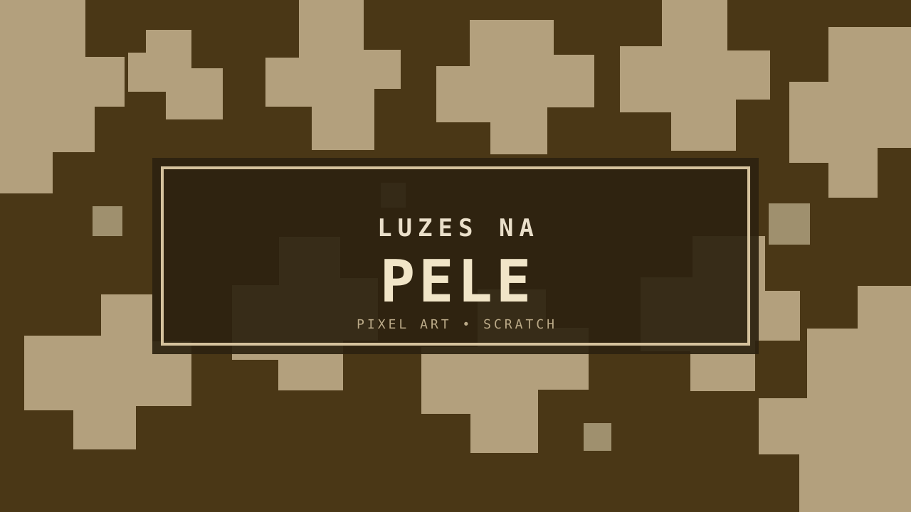

PROTAGONISTA
Ariel
A personagem jogável. Ariel tem vitiligo e, ao conversar com Lucas, explica sua condição e confronta os comentários preconceituosos que recebe.
Uma mini experiência narrativa feita para apresentar o vitiligo a crianças, acompanhar Ariel em uma situação de preconceito na escola e transformar a história em aprendizado.

UMA HISTÓRIA SOBRE ENTENDER O OUTRO
Logo na introdução, o jogo deixa clara sua intenção: explicar o que é o vitiligo e mostrar por que ele não deve ser tratado como algo “nojento” ou contagioso.
A experiência mistura narrativa, movimentação lateral, diálogos e um quiz final para reforçar o conteúdo apresentado.
A personagem jogável. Ariel tem vitiligo e, ao conversar com Lucas, explica sua condição e confronta os comentários preconceituosos que recebe.

O diálogo com Lucas apresenta o conflito central da experiência: medo, desinformação e rejeição diante das manchas de Ariel.

Ariel se movimenta lateralmente pelos cenários usando as setas esquerda e direita.
Botões de interação iniciam a sequência de falas entre Ariel e Lucas.
Após o diálogo, o jogo apresenta explicações sobre vitiligo antes de liberar o quiz.
O jogador passa por três perguntas com alternativas e recebe uma explicação depois de cada resposta.
O jogo usa a primeira questão para trabalhar diretamente a ideia de contágio.
A segunda questão retoma a explicação apresentada logo antes do quiz.
A última pergunta fecha o conteúdo explicando a perda de pigmentação apresentada pelo próprio jogo.
Desenvolvedora de Luzes na Pele, projeto individual criado no Scratch.